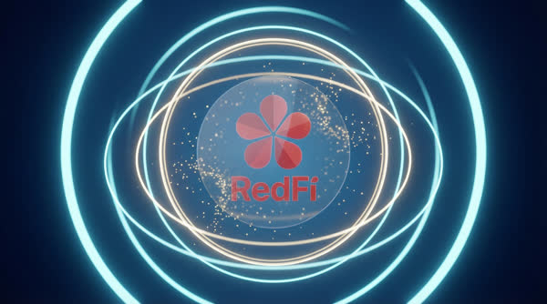
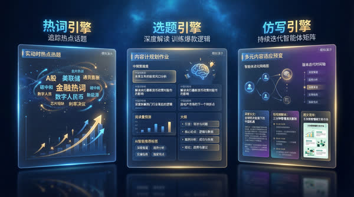
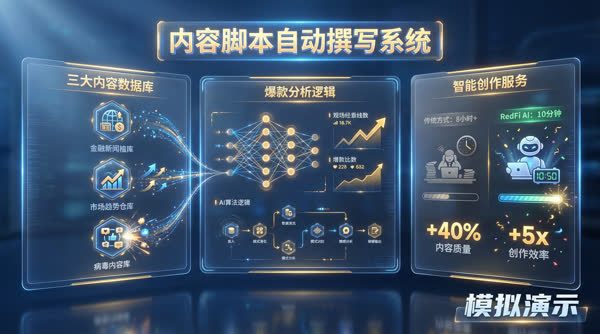
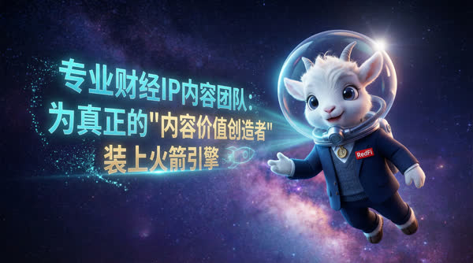
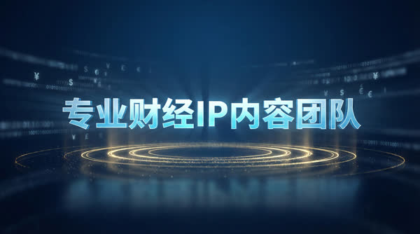
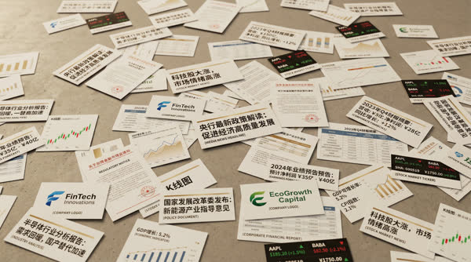

四段实战覆盖「内容生产 → 创作者生态 → 商业化转化」全链路。我的差异点:每段经历都把个人经验沉淀成 SOP、工作流或平台机制——运营里最接近产品经理的能力。
机构的投研观点专业但难传播,达人有流量但缺选题。我参与设计的平台化工作流,把"机构观点"翻译成"达人愿意抢的选题":统一奖励金、按观点一致性验收,商业内容从软文采买升级为策略赋能——可复制、可验收、毛利更高。






合作机构与产品信息已脱敏。宣传片分镜与成片由本人以 AI 工作流制作——运营机制、产品叙事与内容生产在我这里是同一件事。
同时运营 10+ 个财经达人 IP(视频号 / 抖音 / 小红书),负责企业客户内容合作全流程:选题策划、达人适配、脚本、直播预案、社群承接、评论区运营。设计「热点共创 + 多达人分发」模式,把产品卖点转化为低硬广感内容,更可控、可复制、毛利空间更大。
| 环节 | 我的动作 | 沉淀物 |
|---|---|---|
| 选题 | RedFi 热榜 + 机构观点 + 外部爆款,三源交叉选题 | 选题结构库 / 矩阵周报体系 |
| 生产 | AIGC 流水线产出口播文案,人工终审合规与风格 | 财经口播合规手册 / 风格卡 / Skill |
| 分发 | 多达人多平台分发,按账号人设适配脚本 | 达人适配矩阵 |
| 转化 | 评论区与社群承接,商务签约进度管理 | 爆款视频数据库(439 条)/ 复盘模板 |
Trader韭、孙博士等账号的内容与商业化双线运营,周报体系覆盖三平台
科技工具(讯飞智能体耳机)、消费品、本地生活、基金机构等多类型项目脚本与软文定稿 20+ 篇
TikHub API、热榜数据、百条级竞品数据集,反推选题与脚本结构
面向北美 AI 短剧市场搭建创作者供给体系:招募筛选 1000+ 创作者,挖掘有 AI 审美的腰部创作者建立种子池,按能力分层提供差异化培训与内容方向指导,社区活跃度提升 35%。
提示词教程、图生视频流程指南、短剧案例拆解——降低工具门槛,提升投稿效率与内容稳定性
《文生图提示词结构库》《AIGC 短剧品控 SOP》,共创机制 + 审核标准,可复用的培训材料
把创作者产能与工具使用困境结构化同步给产品团队,推动迭代——供给侧运营的产品价值
国风文旅百万粉博主@卷音少女等账号全链路运营:定位 → 策划 → 脚本 → 拍剪 → 投放 → 复盘闭环;更早在家居行业以模板化机制降低边际成本 60%、月均 25 条、从 0 孵化垂类博主。核心方法:AI 批量生产种子内容 + 人工筛选爆款基因 + 数据复盘迭代。
我能用 vibe coding 把运营洞察直接做成可演示的产品:AI 陪伴 App「MirrorPath」原型(记忆机制 / 人格画像 / 导师对话 / 行动反馈),以及这套作品集网站本身。
运营给了我用户洞察和数据手感,AI 工具链给了我把想法变成原型的速度。完整产品案例与交互演示见 主作品集 Casebook。